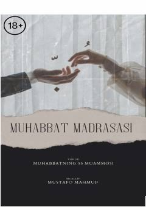

MMZamonaviy oilaviy munosabatlar va insoniy qadriyatlar haqida ta'sirli hayotiy qissalar.
Kitob zamonaviy oilaviy munosabatlar, er-xotin o'rtasidagi tushunmovchiliklar va jamiyatdagi ijtimoiy muammolarga bag'ishlangan. Muallif turli hayotiy hikoyalar va qissalar misolida oila mas'uliyati, muhabbat va erkinlik tushunchalarining asl mohiyatini ochib beradi. Shuningdek, murakkab hayotiy vaziyatlarga duch kelgan insonlarga psixologik tahlillar asosida maslahatlar beriladi.